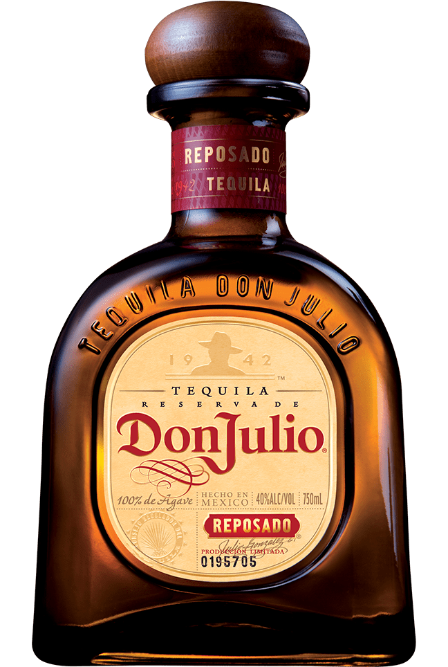

Tequila reposado
Añejado durante ocho meses en barriles de roble blanco americano, el tequila Don Julio® Reposado es de color ámbar dorado y ofrece un regusto rico y suave. Simboliza la esencia misma del perfecto tequila añejado en barriles.
Con un sabor suave y elegante y un aroma acogedor, el tequila Don Julio® Reposado se saborea mejor como parte de un delicioso coctel refrescante o bien frío con hielo.
